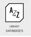
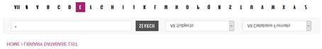

Reading
Most of the e-book are found in the McKay Library.
- Got to the McKay Library’s website
- For O’reilly books
- Click on A-Z, then S, and look for Safari.
- 
- Open the Safari/O’reilly website and search for
- Software Testing, 4th Edition by Paul C. Jorgensen
- Software Testing, Second Edition by Ron Patton
- For EbookCentral
- Click on A-Z, then E, and look for EbookCentral.
- 
- Open the webside and search for Fundamentals of Software Testing
Other articles have a link but if, for some reason, you are not able to access an article using the links above, follow the below process:
- Go to the McKay Library's webpage
- Using the link (such as title or author), fill out a search using the Library's search bar. Usually, the title of the article works just fine.
- Find the article in the results from the search, click on its link.
- Look at the left-hand side of the article's page. All articles are accessible on this page, but others may require you to download the article's pdf.
- Week 01: Business Case
- Find two news articles on Testing.
- "IEEE Software Engineering Book of Knowledge". Read Chapter 4 on "Software Testing". https://www.computer.org/education/bodies-of-knowledge/software-engineering
- Week 02: Testing Fundamentals
- You are going to find an organization, association, or institute on Testing
- Software Testing, Second Edition by Ron Patton Published by Sams, 2005 https://learning.oreilly.com/library/view/software-testing-second/0672327988/
- Chapter 2 The Software Development Process: Product Components
- Association for Software Testing website
- Principles and Positions: The Seven Context-Driven Principles
- Week 03: Software Methodologies.
- Software Testing, 4th Edition by Paul C. Jorgensen Published by Auerbach Publications, 2013 https://learning.oreilly.com/library/view/software-testing-4th/9781466560680/
- Chapter 11: Life Cycle-Based Testing
- Chapter 22: Software Technical Reviews
- Software Testing, Second Edition by Ron Patton Published by Sams, 2005 https://learning.oreilly.com/library/view/software-testing-second/0672327988/
- Chapter 2: The Software Development Process
- Chapter 6: Examining the Code
- Fundamentals of Software Testing by Bernard Homès , and Bernard Homes, Publisher John Wiley & Sons, Incorporated Date 2012-01-17 https://ebookcentral.proquest.com/lib/byui/reader.action?docID=1120766&ppg=75
- Chapter 2.1: Testing Throughout the Software Lifecycle
- R. Juric, "Extreme Programming and its Development Practices" 22nd Int. Conf. Information Technology ITI 2000, Jun. 2000
- [Online] Available: http://ieeexplore.ieee.org/xpls/abs_all.jsp?arnumber=915842&tag=1
- M. James, "What Is Agile Methodology?," Oct. 2008,
- [Online] Available: http://agilemethodology.org/
- Week 04: Testing Techniques
- J. Itkonen et al., "The role of the tester's knowledge in exploratory software testing," IEEE Trans. on Softw. Eng., vol. 39, no. 5, pp. 707-724, May 2013, [Online] Available: http://ieeexplore.ieee.org/stamp/stamp.jsp?tp=&arnumber=6298893&isnumber=6509864
- Software Testing, Second Edition by Ron Patton Published by Sams, 2005 https://learning.oreilly.com/library/view/software-testing-second/0672327988/
- Chapter 4 Examining the Specification
- Chapter 11: Usability Testing
- Week 05: Quality Assurance Measurements
- Software Testing, Second Edition by Ron Patton Published by Sams, 2005 https://learning.oreilly.com/library/view/software-testing-second/0672327988/
- Chapter 21: Software Quality Assurance
- J. Miguel et al. "A review of software quality models for the evaluation of software products," International Journal of Software Engineering & Applications, vol. 5, no. 6, pp. 31-54, Nov. 2014, [Online] Available:
- M. Paulk et al., "Capability Mature Model for Software, Version 1.1," Chapter 1-3 IEEE Software, vol. 10, no. 4, pp. 18-27, Jul. 1993. [Online] Available:
- T. Schorsch, "The Capability Im-Maturity Model (CIMM)," [Online] Available: http://www.grisha.ru/cmm/cimm.htm
- Week 06: Testing Tools
- Research an assigned Testing Tool
- Week 07: Test Cases
- Software Testing, Second Edition by Ron Patton Published by Sams, 2005 https://learning.oreilly.com/library/view/software-testing-second/0672327988/
- Chapter 15: Automated testing and Test tools
- Chapter 18: Writing and Tracking Test Cases
- Week 08: Regression Testing
- Software Testing, Second Edition by Ron Patton Published by Sams, 2005
- https://learning.oreilly.com/library/view/software-testing-second/0672327988/
- Chapter 3: The Realities of Software Testing
- Software Testing, Second Edition by Ron Patton Published by Sams, 2005, https://learning.oreilly.com/library/view/software-testing-second/0672327988/
- Chapter 5 Testing the Software with Blinder On
- Week 09: Integration Testing
- Software Testing, 4th Edition by Paul C. Jorgensen Published by Auerbach Publications, 2013, https://learning.oreilly.com/library/view/software-testing-4th/9781466560680/
- Chapter 13: Integration Testing.
- Certified Tester: Foundation Level Syllabus. https://www.istqb.org/downloads/send/2-foundation-level-documents/281-istqb-ctfl-syllabus-2018-v3-1.html Chapter 2.2.2 Integration Testing
- Software Testing, Second Edition by Ron Patton Published by Sams, 2005 https://learning.oreilly.com/library/view/software-testing-second/0672327988/
- Chapter 18: Writing and Tracking Test Cases
- Fundamentals of Software Testing by Bernard Homès , and Bernard Homes, Publisher John Wiley & Sons, Incorporated Date 2012-01-17
- https://ebookcentral.proquest.com/lib/byui/reader.action?docID=1120766&ppg=75
- Chapter 8: Templates and Models
- Week 10: Verification and Validation
- Software Testing, Second Edition by Ron Patton Published by Sams, 2005 https://learning.oreilly.com/library/view/software-testing-second/0672327988/
- Chapter 16: Bugs Bashes and Beta Testing
- Chapter 19: Reporting what you find.
- https://www.softwaretestingmaterial.com/write-good-bug-report/
- IEEE Std 829-2008: IEEE Standard for Software and System Test Documentation
- Week 11: Architecture Testing
- Software Testing, 4th Edition by Paul C. Jorgensen Published by Auerbach Publications, 2013, https://learning.oreilly.com/library/view/software-testing-4th/9781466560680/
- Chapter 17: Model-Based Testing for System of Systems.
- Week 12: Testing Issues
- Software Testing, Second Edition by Ron Patton Published by Sams, 2005
- https://learning.oreilly.com/library/view/software-testing-second/0672327988/
- Chapter 13. Testing for Software Security
- Chapter 20: Measuring your success.
- Fundamentals of Software Testing by Bernard Homès , and Bernard Homes, Publisher John Wiley & Sons, Incorporated Date 2012-01-17
- https://ebookcentral.proquest.com/lib/byui/reader.action?docID=1120766&ppg=75
- Chapter 5.6: Risk Management
- Introduce Risk Mitigation and use of CMM/CAR (Causal Analysis and Resolution) Techniques. (http://www.software-quality-assurance.org/cmmi-causal-analysis-and-resolution.html )
- Week 13: Project Management
- Software Testing, Second Edition by Ron Patton Published by Sams, 2005 https://learning.oreilly.com/library/view/software-testing-second/0672327988/
- Chapter 17: Planning your test Effort
- Week 14: Testing Career Paths.
- Software Testing, Second Edition by Ron Patton Published by Sams, 2005
- https://learning.oreilly.com/library/view/software-testing-second/0672327988/
- Chapter 22: You Career as a Software Tester
- Software Testing, 4th Edition by Paul C. Jorgensen Published by Auerbach Publications, 2013
- https://learning.oreilly.com/library/view/software-testing-4th/9781466560680/
- Chapter 23: Epilogue: Software Testing Excellence
Reading by Book and Chapter
- IEEE SWEBoK IEEE SWEBoK Chap 1 SW Requirements Validation - Module 10
- IEEE SWEBok Chap 2 SW Design - Module 10
- Chapter 4 on "Software Testing" - Module 01
- Software Testing, 4th Edition by Paul C. Jorgensen Published by Auerbach Publications, 2013 https://learning.oreilly.com/library/view/software-testing-4th/9781466560680/
- Chapter 8: Path Testing - Module 11
- Chapter 9: Data Flow Testing - Module 11
- Chapter 11: Life Cycle-Based Testing - Module 03, 07
- Chapter 13: Integration Testing - Module 09
- Chapter 14: System Testing - Module 10
- Chapter 15: Object-Oriented Testing - Module 07
- Chapter 17: Model-Based Testing for System of Systems. - Module 10
- Chapter 22: Software Technical Reviews - Module 12
- Chapter 23: Epilogue: Software Testing Excellence - Module 14
- Software Testing, Second Edition by Ron Patton Published by Sams, 2005 https://learning.oreilly.com/library/view/software-testing-second/0672327988/
- Chapter 2: The Software Development Process - Module 03, 10
- Chapter 3: The Realities of Software Testing - Module 07, 08
- Chapter 4 Examining the Specification - Module 10
- Chapter 5 Testing the Software with Blinder On - Module 09
- Chapter 6: Examining the Code - Module 07, 11
- Chapter 9 Compatibility Testing - Module 10, 12
- Chapter 10. Foreign-Language Testing - Module 12
- Chapter 11: Usability Testing - Module 11
- Chapter 12 Testing the Documentation - Module 11
- Chapter 13. Testing for Software Security - Module 13
- Chapter 15: Automated testing and Test tools - Module 07, 08
- Chapter 16: Bugs Bashes and Beta Testing - Module 10
- Chapter 17: Planning your test Effort - Module 13
- Chapter 18: Writing and Tracking Test Cases - Module 13
- Chapter 19: Reporting what you find - Module 08, 13
- Chapter 20: Measuring your success - Module 13
- Chapter 22: You Career as a Software Tester - Module 14
- Fundamentals of Software Testing by Bernard Homès , and Bernard Homes, Publisher John Wiley & Sons, Incorporated Date 2012-01-17 https://ebookcentral.proquest.com/lib/byui/reader.action?docID=1120766&ppg=75
- Chapter 2.1: Testing Throughout the Software Lifecycle - Module 03
- Chapter 4.4 Structure-based techniques - Module 08
- Chapter 5.6: Risk Management - Module 12
- Chapter 8: Templates and Models - Module 09